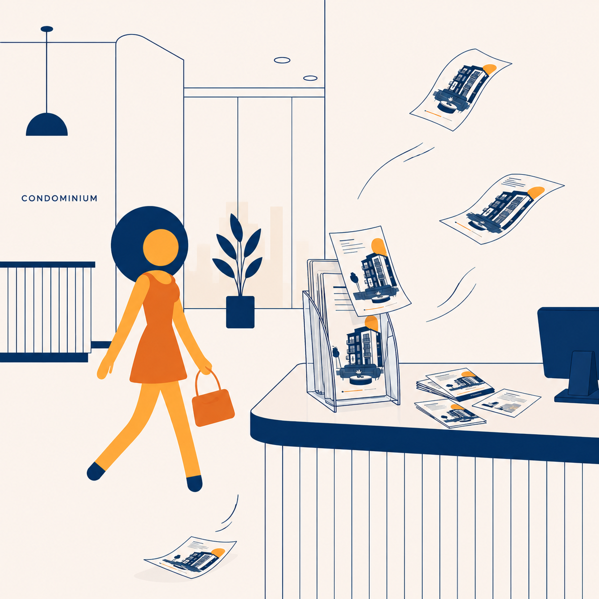
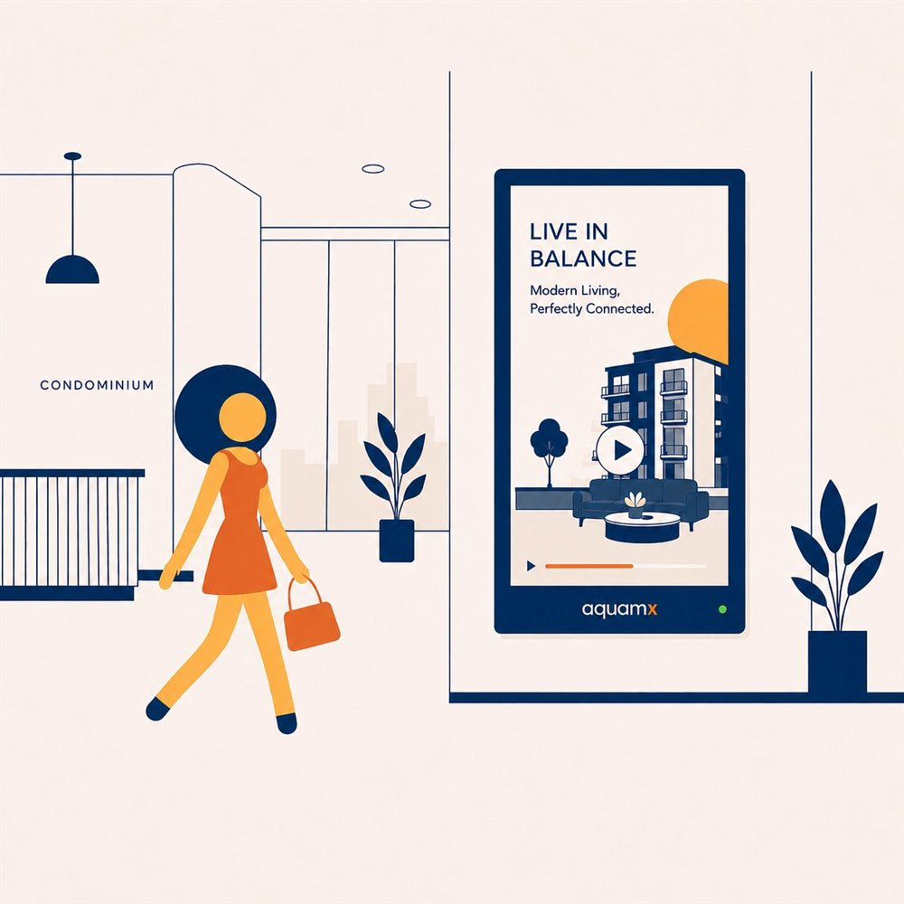
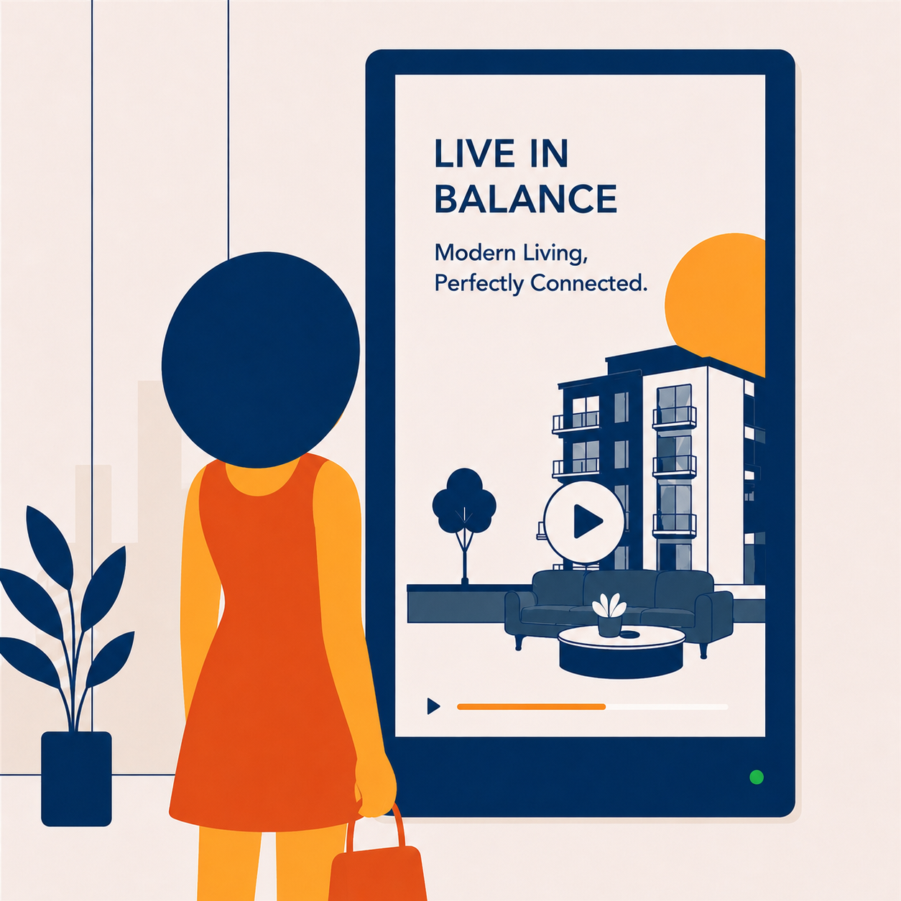
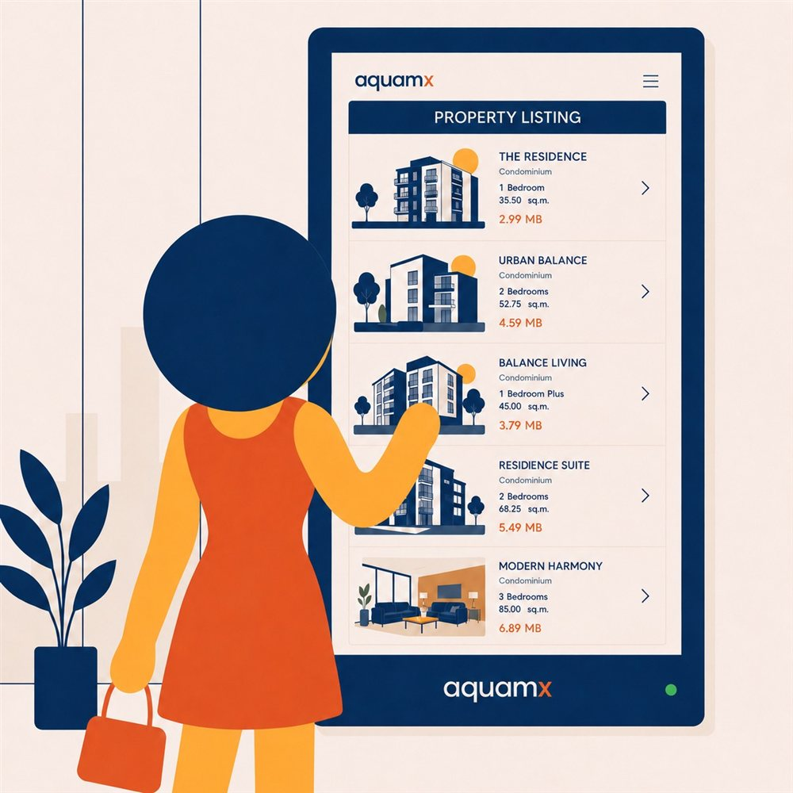

Why AquaMx · Value
ทำไมต้อง
AquaMx Signage
เปลี่ยนวิธีสื่อสารในอาคารจากของเดิมที่คนไม่เห็น · กดต่อไม่ได้ · หายาก — มาเป็นจอ interactive ที่คนเห็นทุกวัน แตะเลือกเอง และส่งต่อไปมือถือได้ทันที
โบรชัวร์ → จอ signage
เดิม

AquaMx

โบรชัวร์ในที่ใส่อะคริลิก ถูกมองข้าม → ขึ้นจอที่ลูกบ้านเห็นทุกวัน · กดต่อได้
ดูเฉย ๆ → แตะ-เลือกได้
เดิม

AquaMx

จอ broadcast ดูผ่านตา กดอะไรไม่ได้ → แตะค้นหา·เลือก แล้วสแกน QR ไปต่อบนมือถือ
เดิม → ด้วย AquaMx
✕ แบบเดิม
✓ ด้วย AquaMx
🤷
ไม่รู้ว่าในตึกมีร้าน/บริการอะไรบ้าง
ต้องเดินหาเอง หรือถามนิติฯ ทีละเรื่อง
→
🗂️
directory รวม essentials ของคอนโด
ร้าน · บริการ · ของใช้ — explore เองได้ในที่เดียว
📌
ประกาศติดบอร์ด / ไลน์กลุ่ม
เลื่อนหาย · หายาก · ลูกบ้านพลาดเรื่องสำคัญ
→
🔔
รวมประกาศนิติฯ ค้นหาได้ง่าย
อยู่ที่เดียว · ค้นย้อนหลังได้ · ไม่ตกหล่น
🕐
หาห้องเช่าได้เฉพาะตอนเซลล์อยู่
นอกเวลาทำการ = พลาดลูกค้าที่สนใจ
→

ดูห้องว่าง + นัดหมายได้ทุกวัน 06:00–22:00
ปิดการขายต่อได้แม้เซลล์ไม่อยู่หน้างาน
📞
โทร / วอล์กอินเพื่อจองคิว
ยุ่งยาก · สายไม่ว่าง · ลืมนัด
→
📅
นัดหมาย / จองผ่านหน้าจอได้เลย
เลือกวัน-เวลาเองทันที · ยืนยันต่อบนมือถือ
🛒
ต้องเดินไปที่ร้าน
ไม่สะดวก · เสียเวลา · ร้านปิดก็จบ
→

สั่งซื้อผ่านจอเหมือน kiosk หน้าร้าน
เลือกสินค้า · สั่ง · ส่งถึงห้อง
สรุปสิ่งที่ได้
👁️
เห็นมากขึ้น
อยู่ในจุดที่คนเดินผ่านทุกวัน
👆
กดต่อได้
interactive + handoff สู่มือถือ
🗂️
รวมทุกอย่าง
directory + ประกาศ ที่เดียว
🕐
เปิดทุกวัน
06:00–22:00 · จอง·สั่ง·นัด
📊
วัดผลได้
รู้ว่าอะไรถูกดู/ถูกแตะ
ข้อได้เปรียบเชิงกลยุทธ์ · สำหรับแบรนด์ / ผู้ลงโฆษณา
นอกจากแทนสื่อเดิม — AquaMx signage ยังมีข้อได้เปรียบที่สื่อออฟไลน์ทั่วไปทำไม่ได้ โดยเฉพาะสำหรับแบรนด์/เอเจนต์ที่ต้องการเข้าถึงลูกบ้านอย่างตรงกลุ่มและวัดผลได้
🔗
O2O — ออนไลน์ + ออฟไลน์
ใช้คู่กับสื่อออนไลน์ (LINE · โซเชียล · เว็บ) — จอสร้างการรับรู้ออฟไลน์ · QR พาเข้าออนไลน์ เสริมกันทั้งสองทาง
🎯
กลุ่มเป้าหมายชัดเจน
เข้าถึง “ลูกบ้านในอาคาร” โดยตรง — captive audience ที่ดีโมกราฟิกชัด ไม่หว่านกว้างแบบบิลบอร์ด
🖥️
จอเป็น kiosk ทำรายการ
จอง · สั่งซื้อ · นัดหมาย · รับโปร — จบในจอเดียว ไม่ต้องไปเคาน์เตอร์หรือหน้าร้าน
📊
เก็บ engagement ได้
รู้ว่าอะไรถูก ดู · แตะ · สแกน — วัดผลเป็นตัวเลขได้จริง ต่างจากจอ broadcast ที่ไม่รู้อะไรเลย
🧑💼
ลดภาระพนักงาน
ลูกค้าหาข้อมูลเองบนจอ — ทดแทนการตอบคำถามซ้ำ ๆ ของ staff · เปิดให้ข้อมูลทุกวัน 06:00–22:00
🎁
แจกโปร / ทำกิจกรรมกับคนสนใจจริง
มอบโปรโมชั่น/คูปองเฉพาะคนที่แตะดูเอง = high-intent ตรงกลุ่ม ไม่เปลืองงบกับคนที่ไม่สนใจ